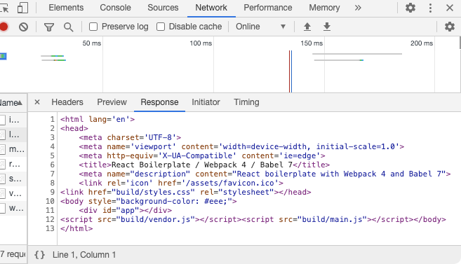

SPA and SEO
Why did I choose this topic?
SPA advantages:
- High speed
- No reload and re-render
- Ease in building
SPA problems:
- A lot of time first renders
- SEO is difficult
- The search robot sees the site as empty
Briefly why SEO is important
-
About 90% of the traffic comes from the first page of the results
- About 70% of traffic from the first five sites
What the search robot sees on the page?

The problem: render blank page on load
Google in October 2015 made the important adversity
- Rendering longer than 5 seconds
- Isn’t possible to scan the structure of the site
- Google site analize isn’t possible
Our ways
- Server-Side Rendering (SSR)
- Static Site Generation (SSG) or prerender
How it works (SSR):
Split our code
- Render content at runtime on the server
- Backend will check: Is JS on?
Problems SSR:
-
The App is divided into Client and Server - support is difficult
- Synchronous state and components life cycles
Static Site Generation (SSG) or prerender
How it works?
Up sides
- Minimum code modify
- Support is very simple
- Easy to apply
Down sides
- It’s useless for pages with often changes data
- Some prerender services aren’t free
Free solutions
-
OpenSource prerender we can implement on your own server with
Node.js
-
Prerender SPA Plugin, which we can apply to modify our
webpack.config.js
Bottom line
- We have to take this subject into account
- Make a decision
- And choose the way